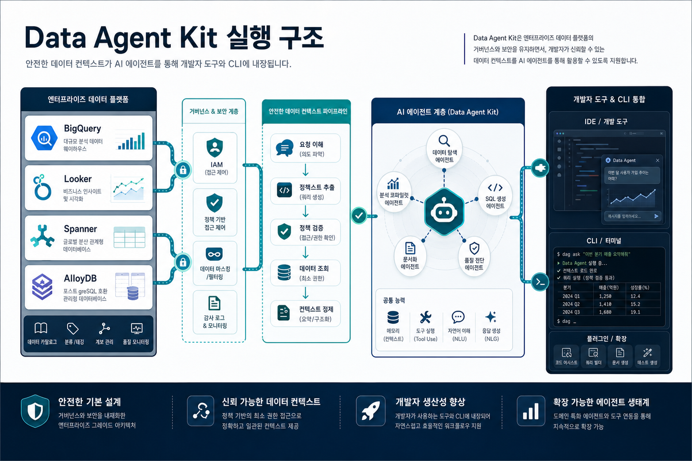
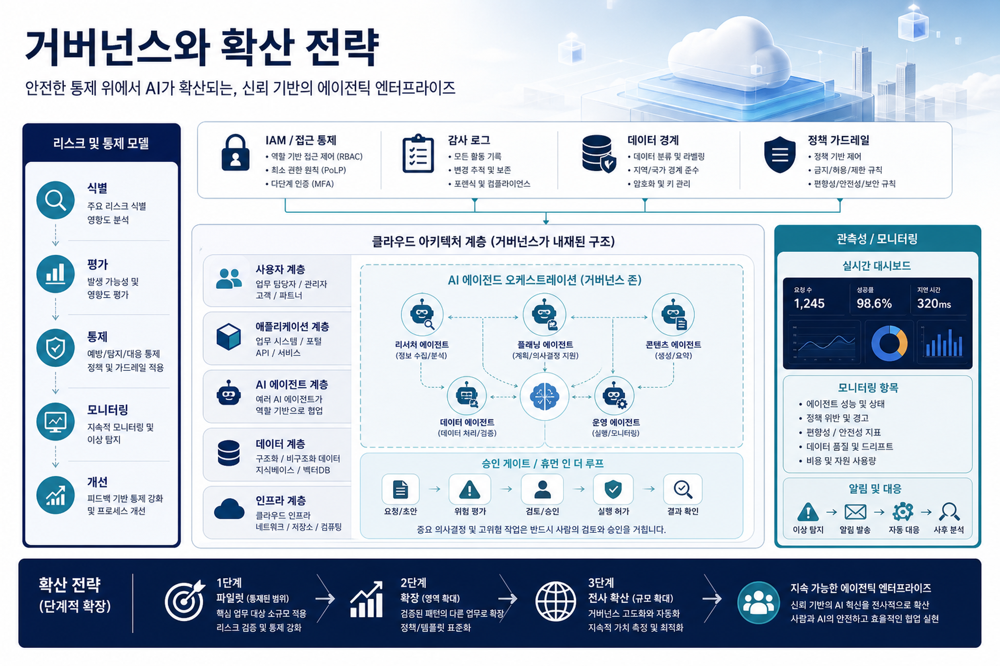

1. 핵심 트렌드 분석: Agentic Enterprise가 제품군 전체를 관통한다
Google I/O 26 관련 Cloud 블로그는 Gemini Omni, Google Antigravity, Gemini Spark, Workspace 기능을 한 묶음으로 제시한다. 메시지는 분명하다. AI는 더 이상 별도 콘솔에서 호출되는 기능이 아니라, Workspace·개발도구·데이터 플랫폼 안에서 사용자의 지시를 받아 실제 업무를 수행하는 상시 에이전트가 된다.
업무 계층
Gemini Spark와 Workspace 기능은 개인 업무 생산성에서 “자율 실행”으로 확장된다.
개발 계층
Antigravity와 Agent Platform 연계는 에이전트 기반 개발 경험을 조직 단위로 확장한다.
데이터 계층
Data Agent Kit은 에이전트가 기업 데이터에 접근하고 맥락을 얻는 방식을 표준화하려 한다.
2. 기술 변화의 의미: Data Agent Kit은 ‘에이전트용 데이터 면’을 만든다

Data Agent Kit은 VS Code, Claude Code, Codex, Antigravity CLI 같은 개발 환경에 데이터 엔지니어링·데이터 과학 스킬과 도구를 연결한다. 중요한 포인트는 “개발자가 데이터에 접근한다”가 아니라 “에이전트가 안전하게 데이터 컨텍스트, 메모리, 개인화에 접근한다”는 구조다.
| 변화 | 기존 방식 | 전략적 의미 |
|---|---|---|
| 데이터 접근 | 툴·권한·쿼리 경로가 분산 | 에이전트용 공통 데이터 접근 패턴 필요 |
| 개발 경험 | IDE, CLI, 데이터 콘솔이 분리 | 개발자 워크플로우 내부에서 AI가 데이터 작업을 수행 |
| 보안 | 사용자 권한 중심 통제 | Agent Identity, IAM, 감사 로그, 승인 게이트가 필요 |
| 운영 | PoC별 개별 연결 | 플랫폼팀이 재사용 가능한 agent-data harness를 제공해야 함 |
3. 기업 적용 관점: AI 플랫폼팀의 우선순위가 바뀐다
이번 신호는 AI 플랫폼팀이 모델 API 제공자에서 “에이전트 실행 환경 운영자”로 이동해야 함을 뜻한다. BigQuery, Looker, Spanner, AlloyDB, IAM 같은 기존 클라우드 자산은 에이전트에게 바로 노출하기보다 정책화된 도구·스킬·컨텍스트 계층으로 감싸야 한다.
1
Agent use case를 업무 단위로 정의
문서 요약이 아니라 구매, 영업, 데이터 분석, 장애 대응처럼 책임·권한·성과가 있는 업무를 기준으로 우선순위를 잡는다.
2
데이터 접근 패턴 표준화
BigQuery/Looker/DB 접근을 MCP·tool contract·권한 템플릿으로 정리하고, 사람 권한과 에이전트 권한을 분리한다.
3
관측성과 평가를 기본값으로 삽입
요청, 도구 호출, 데이터 접근, 비용, 결과 품질을 추적해야 운영 가능한 Agentic Enterprise가 된다.
4. 한국 기업 관점 시사점
한국 대기업은 이미 데이터 플랫폼과 그룹웨어, 보안 체계가 복잡하게 분화되어 있다. 따라서 Google Cloud의 방향성은 “새 AI 툴 도입”이라기보다 기존 업무·데이터·보안 거버넌스를 AI 에이전트 시대에 맞게 재배치하는 과제로 읽어야 한다.
제조·유통
수요예측, 품질, SCM 데이터를 에이전트가 조회·분석하려면 데이터 카탈로그와 권한 체계가 먼저 정리되어야 한다.
금융·공공
Agent action에 대한 승인, 설명가능성, 감사 로그를 설계하지 않으면 PoC 이후 production 확산이 막힌다.
IT·플랫폼 조직
개별 부서 챗봇이 아니라 공통 Agent Platform, 데이터 커넥터, 평가 체계를 제공하는 방식이 효율적이다.
5. 실행 전략: 30-60-90일 로드맵

| 기간 | 실행 과제 | 산출물 | 주의점 |
|---|---|---|---|
| 30일 | 상위 5개 Agent use case 선정, 데이터 소스·권한 매핑 | Use case canvas, data access matrix | 현업 요구를 “챗봇”으로 축소하지 않기 |
| 60일 | Data Agent Kit/Agent Platform 유사 구조로 파일럿 도구 체인 설계 | Tool contract, IAM policy, logging baseline | 에이전트 권한과 사람 권한 혼합 금지 |
| 90일 | 품질 평가, 비용 추적, 승인 게이트 포함한 production 후보 검증 | 운영 대시보드, 평가 리포트, 확산 기준 | 모델 성능만 보지 말고 업무 성과와 통제 가능성 측정 |
6. 리스크와 거버넌스 고려사항
- 권한 과다 부여: 에이전트가 사람 계정의 광범위한 권한을 그대로 상속하면 데이터 유출 위험이 커진다.
- 도구 호출 책임 경계: 에이전트가 쿼리, 변경, 전송, 승인 같은 행위를 할 때 사람이 어디서 개입하는지 명확해야 한다.
- 데이터 품질과 맥락: 잘못된 데이터 카탈로그나 stale 데이터는 에이전트 답변보다 더 위험한 자동 실행 오류를 만든다.
- 비용·성능 관리: 멀티모달·장기 컨텍스트·도구 호출이 늘수록 비용 추적과 캐싱 전략이 필수다.
수집 출처
- Innovations from Google I/O 26 on Google Cloud — Google Cloud Blog - AI & Machine Learning, 2026-05-20
- Data Agent Kit brings data skills and tools to your IDE or CLI — Google Cloud Blog - Data Analytics, 2026-05-20
확인 필요: 각 기능의 GA/Preview 상태, 한국 리전 지원, 가격·할당량, 조직별 보안 정책 적합성은 원문과 공식 문서에서 추가 확인이 필요하다.
이미지 프롬프트 부록
# Image Prompt Log — GCP Daily Blog 20260520 ## Image Prompt 1 - 목적: Hero image for the strategic blog opening. - 삽입 위치: Hero section and opening trend narrative. - image2 prompt: Executive technology blog illustration, Korean enterprise AI strategy. A modern cloud control room showing Gemini Enterprise agents, data pipelines, governance guardrails, and Korean enterprise decision makers. Premium editorial style, clean Google Cloud inspired colors, no logos, no tiny unreadable text. Include concise Korean title text inside the image: 'Agentic Enterprise 전략'. - 권장 비율: 3:2 / 1536x1024 - alt 텍스트: Gemini Enterprise와 Agentic Enterprise 전략을 상징하는 클라우드 AI 관제실 일러스트 ## Image Prompt 2 - 목적: Data Agent Kit and enterprise data-agent architecture visualization. - 삽입 위치: Data/AI execution architecture section. - image2 prompt: Executive technology blog infographic, data agents embedded into developer tools and CLI, BigQuery Looker Spanner AlloyDB context flowing safely into AI agents. Clean editorial illustration for Korean enterprise readers, premium consulting report aesthetic, no official logos. Include concise Korean title text inside image: 'Data Agent Kit 실행 구조'. - 권장 비율: 3:2 / 1536x1024 - alt 텍스트: Data Agent Kit이 IDE와 CLI에서 기업 데이터와 AI 에이전트를 연결하는 구조 ## Image Prompt 3 - 목적: Governance, risk, and scaling model visual. - 삽입 위치: Risk/governance and execution strategy section. - image2 prompt: Executive cloud AI governance illustration, risk and control model for agentic enterprise: IAM, audit logs, data boundaries, approval gates, observability dashboards, and AI agents. Sophisticated Korean business blog visual, no brand logos, no unreadable small text. Include concise Korean title text inside image: '거버넌스와 확산 전략'. - 권장 비율: 3:2 / 1536x1024 - alt 텍스트: AI 에이전트 확산을 위한 IAM, 감사, 승인, 관측성 거버넌스 구조